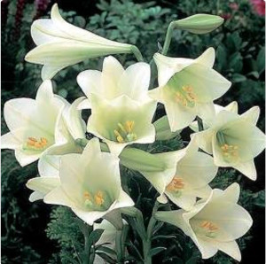
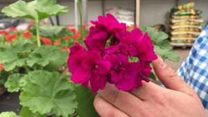

Durante la primavera vemos florecer las azucenas

, los claveles , y los humildes geranios
, y los humildes geranios 
.Durante la primavera vemos florecer las azucenas

, los claveles
, y los humildes geranios 
.